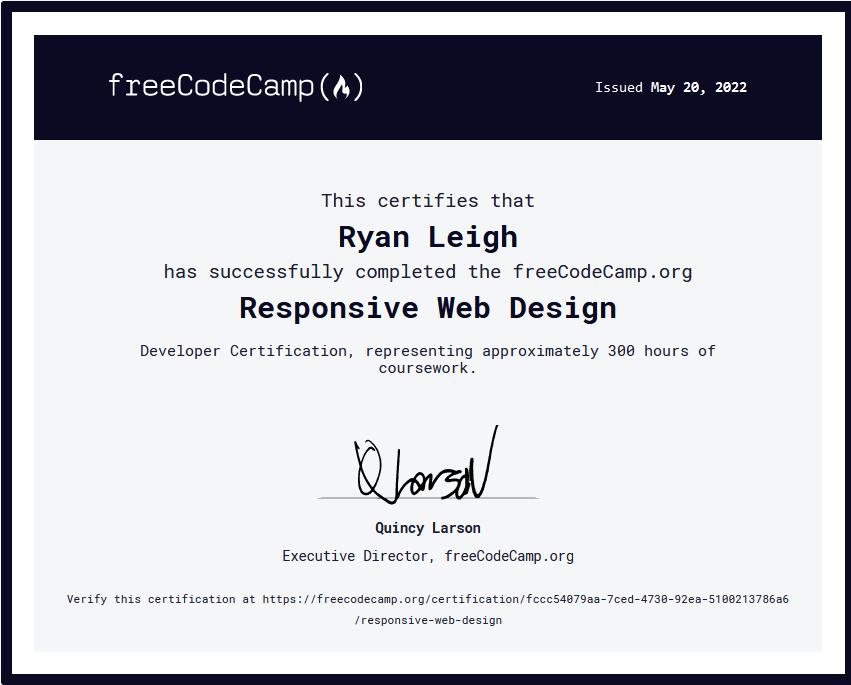

I am a student at Chaparral High School in the graduating class of 2022. I am a programmer for our high school robotics team: Firebirds 3019 and I am proficient in Java, HTML, and CSS.
In my free time, I love to hang out with friends either at the park, school, movies, or online playing various titles such as Rocket League, Battlefront, or Destiny.
View Some of My Projects:

I was the programmer for the robotics team this year. Click the picture for a link to the github repository housing all my code. I love robotics, its a place of learning, development, and friendship. I've developed many core memories there and it has definitely been a huge influence on my future. I went to meetings twice a week in the first semester and every day for a three month period during the spring. The last year has been a tumultuous learning process of programming and robotics control theory. I tested so much code, most of which didn't work, but some that worked like a charm. My inspiration is purely in the pursuit to win and compete. This is what drives the First Robotics Competition and keeps people like me motivated.

I labored away at the FreeCodeCamp "Resposive Web Design" Certification. Click for a link to the certification. I definitely wasn't three hundred hours but it expands my coding knowledge and portfolio. It helped me create this website as well. The process was as simple as loading into FreeCodeCamp and grinding away at the certification and my objective was another piece to add to the resume and to learn how to build a website.
My third and last project is this website here. Built by hand rather than weebly or google sites, I took an academically more rigorous final than my fellow peers. As depicted above, I finished the certification and this is one of the projects for that certification. I took an academic risk here which I hope you can appreciate. The website is very dirty and unclean but this is the first of many eportfolios I will be coding in my future.